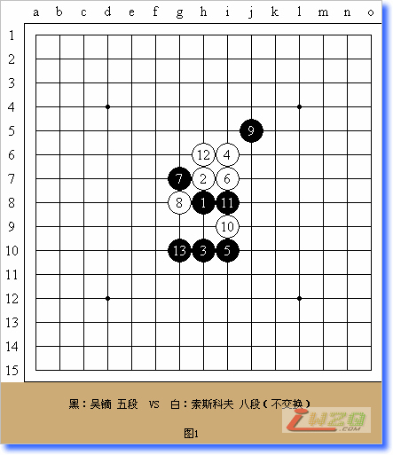
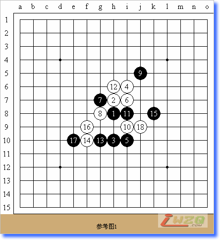
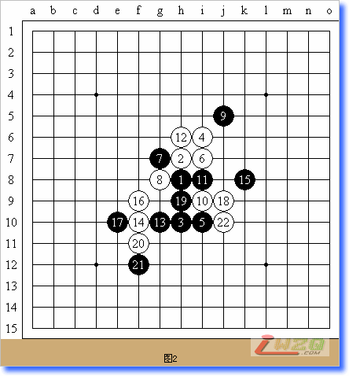
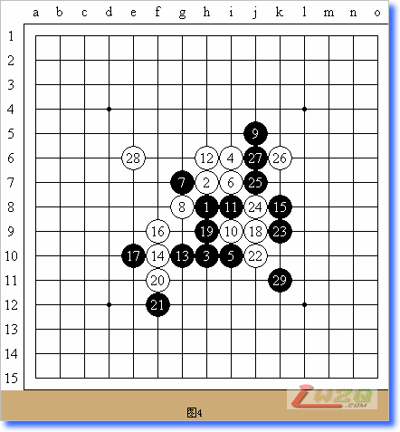
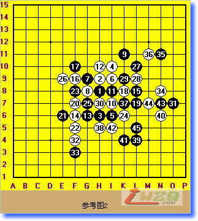
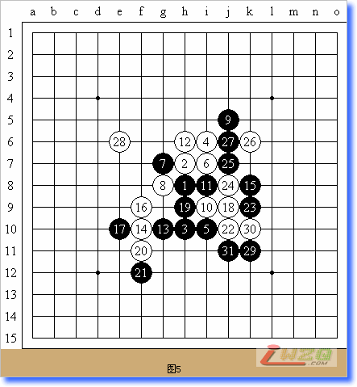
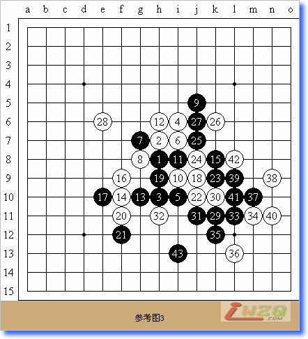
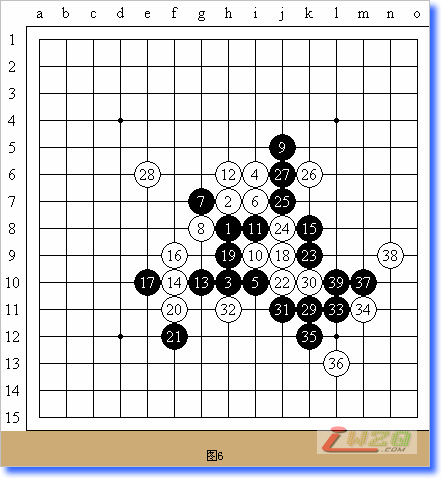
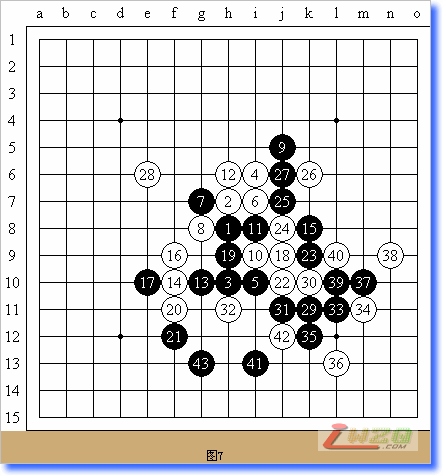

世锦赛第11轮吴镝对索斯科夫
#1 世锦赛第11轮吴镝对索斯科夫 作者：有志青年 发表时间：2007-8-16 7:26:37
今天是第十届世界连珠锦标赛A组最后一轮的比赛。已经稳拿亚军的中国选手吴镝五段同俄罗斯名将索斯科夫八段的对局格外引人注目。因为这一局将关系到冠军的最终归属。在谜底即将揭晓之前，大家都已经是浮想联翩。尤其是中国的棋手和爱好者们都已经在等待吴镝为中国捧回第一个世锦赛A组冠军奖杯了！

目前，对局已经开始。吴镝开局，瑞星。看来对于最后一局，吴镝还是非常谨慎的。瑞星局是目前比较平衡的布局，黑白双方各有机会。索斯科夫没有提出交换，可能他觉得还是拿白棋更加安全。实战白12团角，索氏看来是害怕走其他变化会陷入吴镝的套路，以及害怕进入大定式被逼和，所以只能选择这个变化。而吴镝也是很聪明的，为了避免走自己不熟悉的变化（山口这次下出的新变化），谨慎的选择黑13活三变化也不失为明智之举。

参考图是一般正常的变化手段。到目前的第15手和参考图的变化一致。索斯科夫在考虑下一手的应对。

目前，双方进展到上图。到白18和参考图给出的变化是一样的。看来前面可以变化的余地也实在有限。黑19活三是追求主动的一手。通常也有直接走在15下面的手段。但是部分棋手指出，这个变化将进入比较平稳的阶段，双方都很难有大的作为，和棋的概率比较大。还是实战不错，黑棋追求主动的变化。白20正招，也是可以想见的积极防御手段。黑21防御比较新颖，一般反向防御的比较多，但是上海余皓三段指出，目前的黑21是积极开拓自身下方势力的有效手段，因为白棋上方有黑棋的牵制，没有直接取胜的方法。白22冷静的回身防御。看来本轮的2位选手都非常冷静，同时也是采取了积极的应对策略。

实战双方拼的很凶。进行到目前情况，李洪斌八段指出：吴镝感觉要挂了，白棋大概不用防，直接上面抢攻，他被别人研究害死了。
提供一个经过黑石软件拆解的变化，白没有任何机会。

李洪斌表示，吴镝这盘只要和棋就行，现在的局面变成对攻了。我在直播室听说赛前有网络的高手认为目前的局面黑大优甚至必胜，并且给吴镝准备过此变化。实战或许吴镝没想到对手下的这样强。后面几手明显乱了方寸。

针对索斯科夫白28非常冒险的一手，赌博式的认定黑棋在下面没有杀或者杀不掉，这样黑29要回身防御已经是不现实的了。吴镝唯一的选择就是义无返顾的攻击，直至胜利。北京殷立成七段指出，吴镝如果杀不掉，就要输，很危险。

这是上海余皓三段提供的黑在下方的取胜手段，只要吴镝能这么下，就可以取胜。

吴镝实战下法几乎同参考图一致，那么可以说明他已经看到了必胜的道路。现在只等最后时刻的到来。A组冠军奖杯已经近了，非常近了，在向中国棋手招手了。

现在已经变的很明晰了。索斯科夫的白28“赌博”计划彻底破产。吴镝胜了！胜利属于中国！吴镝为中国五子棋捧回了一座沉甸甸的奖杯！这是几代棋手的梦想啊！
#2 Re:世锦赛第11轮吴镝对索斯科夫 作者：逆刃 发表时间：2007-8-16 8:13:23
精彩!无敌就是强悍!#3 Re:世锦赛第11轮吴镝对索斯科夫 作者：风の情深 发表时间：2007-8-27 20:30:47
强！！！ 无敌！
如果32直接挡2 黑能赢吗？
#4 Re:世锦赛第11轮吴镝对索斯科夫 作者：风の情深 发表时间：2007-8-27 20:33:24
答案已经知道了！！ 呵呵 到底是世界一流选手#5 Re:世锦赛第11轮吴镝对索斯科夫 作者：笨蛋020 发表时间：2007-11-25 9:38:51
这个还是比较好算的俄罗斯人太轻敌了